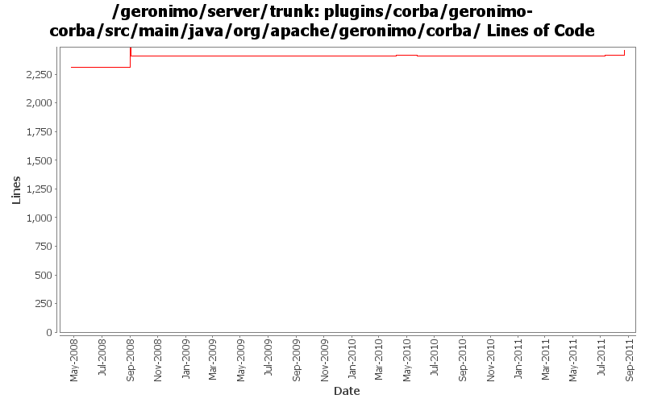

[root]/plugins/corba/geronimo-corba/src/main/java/org/apache/geronimo/corba
 proxy
(1 files, 87 lines)
proxy
(1 files, 87 lines)
 security
(4 files, 538 lines)
security
(4 files, 538 lines)
 config
(0 files, 0 lines)
config
(0 files, 0 lines)
 css
(1 files, 140 lines)
css
(1 files, 140 lines)
 ssl
(1 files, 51 lines)
ssl
(1 files, 51 lines)
 tss
(2 files, 339 lines)
tss
(2 files, 339 lines)
 transaction
(4 files, 327 lines)
transaction
(4 files, 327 lines)
 nodistributedtransactions
(2 files, 134 lines)
nodistributedtransactions
(2 files, 134 lines)
 util
(5 files, 1728 lines)
util
(5 files, 1728 lines)

| Author | Changes | Lines of Code | Lines per Change |
|---|---|---|---|
| Totals | 40 (100.0%) | 261 (100.0%) | 6.5 |
| djencks | 10 (25.0%) | 198 (75.9%) | 19.8 |
| hanhongfang | 1 (2.5%) | 45 (17.2%) | 45.0 |
| xuhaihong | 1 (2.5%) | 9 (3.4%) | 9.0 |
| genspring | 5 (12.5%) | 5 (1.9%) | 1.0 |
| jlaskowski | 2 (5.0%) | 2 (0.8%) | 1.0 |
| dblevins | 3 (7.5%) | 2 (0.8%) | 0.6 |
| jdillon | 16 (40.0%) | 0 (0.0%) | 0.0 |
| gawor | 2 (5.0%) | 0 (0.0%) | 0.0 |
GERONIMO-6116 differentiate the two "OpenEJB ORB Adapter" displayed in "Linstening on Ports" after server startup.
45 lines of code changed in 1 file:
OPENEJB-1567 Overriding of per-interface transaction attributes only supported for different method signatures
Geronimo Corba side need coresponding changes to build correct transaction policies.
5 lines of code changed in 1 file:
GERONIMO-5945 GBean startup NPE when en EJB module includes two EJB associated with the same IOR object
0 lines of code changed in 2 files:
Lower TSSLink GBean's priority so that it starts after EjbModule GBean to avoid a NPE within org.apache.geronimo.corba.AdapterWrapper.start(ORB, POA, Policy) method.
0 lines of code changed in 2 files:
Updates corresponding to OPENEJB-1354: Internal CoreDeploymentInfo class renamed to BeanContext
0 lines of code changed in 2 files:
a. remove the use of configurationUrl \n b. Add a BundleAwareReference interface
9 lines of code changed in 1 file:
GERONIMO-5092 fix split packages, update things a bit for osgi
4 lines of code changed in 1 file:
Hopefully makes the tck happy
2 lines of code changed in 1 file:
header fixes (Rev, Date)
2 lines of code changed in 2 files:
GERONIMO-4258 clean up some naming constant usage
0 lines of code changed in 2 files:
Try to fix filename case step 1
0 lines of code changed in 1 file:
GERONIMO-4239, sort of. Use transitive depenedencies in c-m-p everywhere. This may break stuff.... let me know
194 lines of code changed in 6 files:
more updates to get things going with latest openejb api
0 lines of code changed in 2 files:
(GERONIMO-3985) Use SLF4J as the primary logging facade for Geronimo
0 lines of code changed in 16 files: